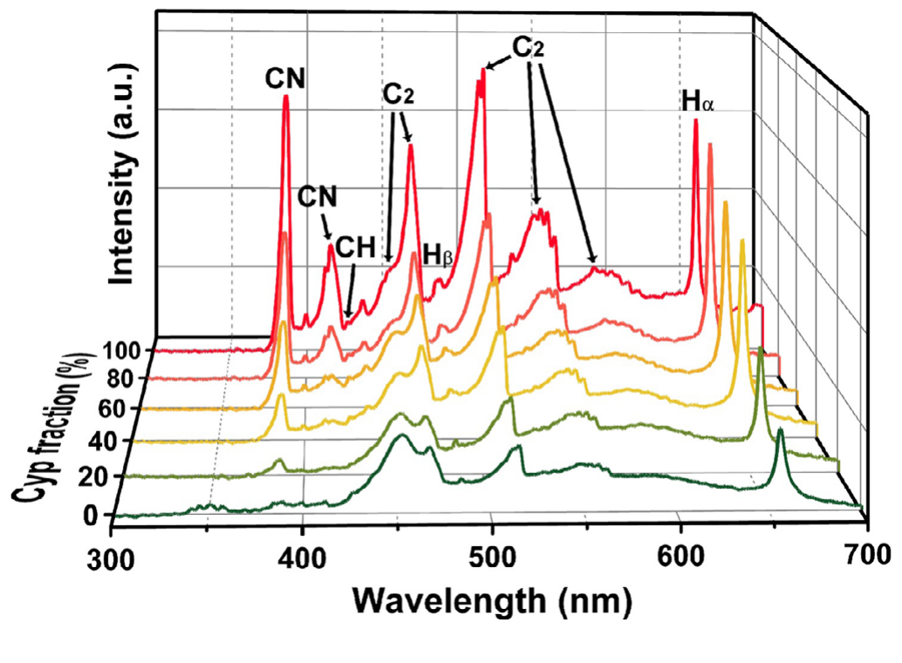
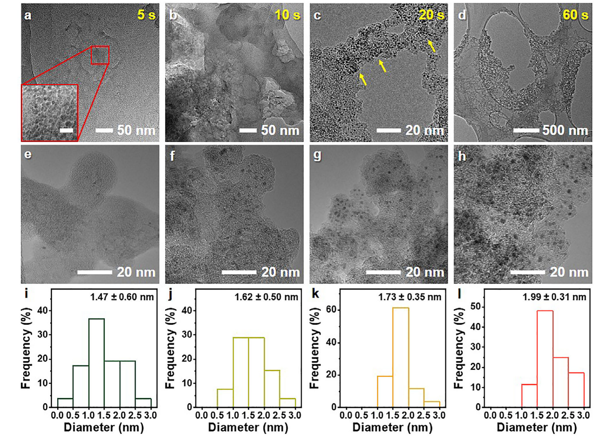
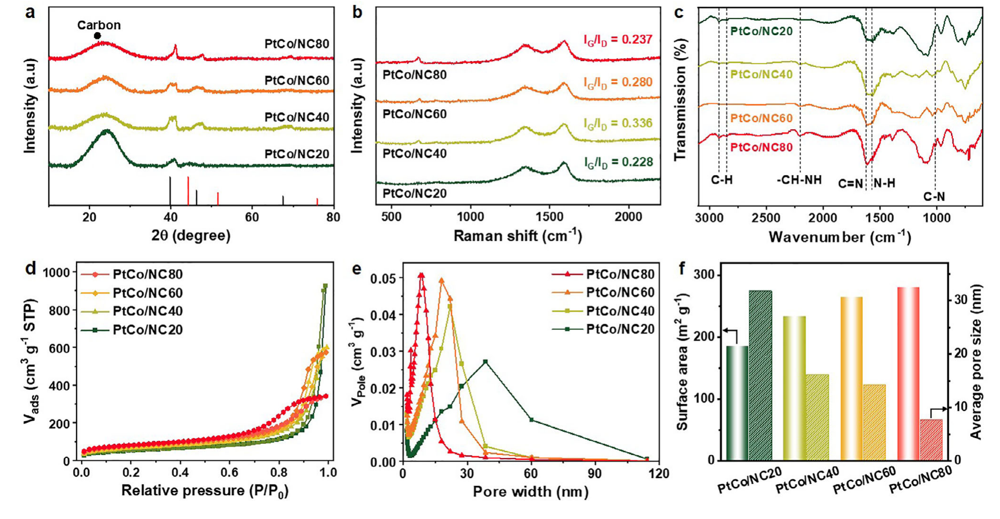
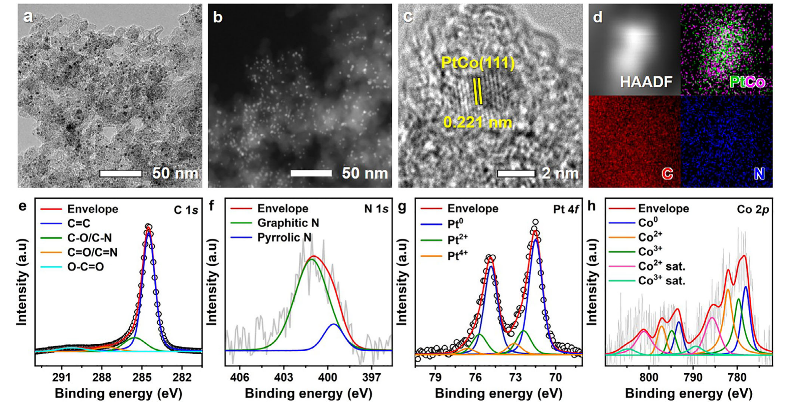
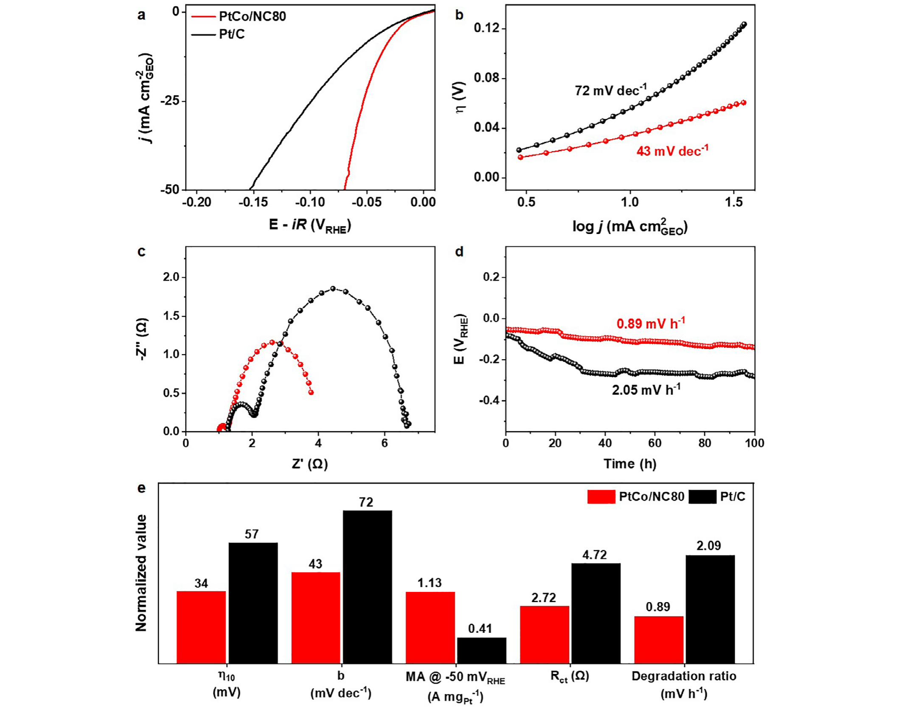
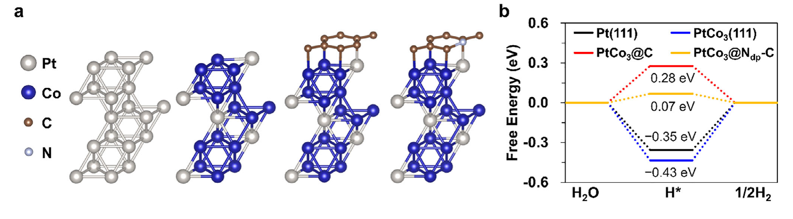

Executive Summary for Researchers (4 Key Findings) Ringkasan Eksekutif untuk Peneliti (4 Pilar Temuan Utama)
1. Alkaline HER Kinetic Bottleneck: Alkaline water electrolysis (AWE) and anion exchange membrane water electrolysis (AEMWE) offer cost-effective pathways for green hydrogen production. Elektrolisis air alkali (AWE) dan elektrolisis membran penukar anion (AEMWE) menawarkan jalur berbiaya terjangkau untuk produksi hidrogen hijau. However, alkaline HER kinetics suffer from a sluggish initial water dissociation step (Volmer step: H₂O + e⁻ + * → H* + OH⁻), while commercial Pt/C catalysts remain prone to agglomeration and carbon support corrosion. Namun, kinetika HER alkali terhambat oleh tahap disosiasi air awal yang lamban (langkah Volmer: H₂O + e⁻ + * → H* + OH⁻), sementara katalis Pt/C komersial rentan terhadap aglomerasi dan korosi penyangga karbon.
2. 60-Second One-Pot Solution Plasma Synthesis: Replacing toxic wet-chemical reducing agents and high-temperature calcination, the Solution Plasma Process (SPP) discharges 30 kHz cold plasma between Pt and Co wire electrodes immersed in benzene and cyanopyrazine. Menggantikan agen pereduksi kimia basah yang beracun dan kalsinasi suhu tinggi, Solution Plasma Process (SPP) melepaskan lucutan plasma dingin 30 kHz di antara elektroda kawat Pt dan Co yang terendam dalam benzena dan cyanopyrazine. Simultaneous metal sputtering and solvent pyrolysis produce uniform sub-2 nm PtCo nanocrystals embedded in mesoporous N-doped carbon within 60 seconds at room temperature. Pemercikan atom logam dan pirolisis pelarut secara serempak menghasilkan nanokristal PtCo sub-2 nm seragam yang tertanam dalam karbon terdoping-N mesopori hanya dalam 60 detik pada suhu ruang.
3. Record Electrocatalytic Activity & 100-Hour Durability: In 1.0 M KOH, PtCo/NC80 exhibits an overpotential of only 34 mV at 10 mA cm⁻², outperforming commercial 20 wt% Pt/C (57 mV), Pt/NC80 (53 mV), and Co/NC80 (297 mV). Di dalam 1,0 M KOH, PtCo/NC80 memperlihatkan overpotensial hanya 34 mV pada 10 mA cm⁻², mengungguli Pt/C komersial 20 wt% (57 mV), Pt/NC80 (53 mV), dan Co/NC80 (297 mV). Its Tafel slope of 43 mV dec⁻¹ indicates rapid Volmer-Heyrovsky kinetics, and continuous 100-hour chronopotentiometry confirms a minimal degradation rate of 0.89 mV h⁻¹. Kemiringan Tafel sebesar 43 mV dec⁻¹ mengindikasikan kinetika Volmer-Heyrovsky yang cepat, dan kronopotensiometri kontinyu selama 100 jam mengonfirmasi laju degradasi minimal sebesar 0,89 mV h⁻¹.
4. DFT Mechanistic Insights on PtCo3@Ndp-C: Density Functional Theory (DFT) calculations reveal a strong interfacial binding energy of -1.14 eV between the PtCo3(111) alloy core and the N-doped carbon shell, effectively preventing metal detachment. Perhitungan Teori Fungsional Kerapatan (DFT) mengungkapkan energi pengikatan antarmuka yang kuat sebesar -1,14 eV antara inti paduan PtCo3(111) dan cangkang karbon terdoping-N, sehingga efektif mencegah pelepasan logam. Electronic coupling downshifts the Pt d-band center, yielding a near-optimal hydrogen adsorption free energy (ΔG_H* = -0.07 eV) right at the apex of Sabatier's volcano plot. Kopling elektronik menggeser turun pusat pita-d Pt, menghasilkan energi bebas adsorpsi hidrogen mendekati optimal (ΔG_H* = -0,07 eV) tepat di puncak kurva gunung berapi Sabatier.
1. Alkaline HER Catalyst Urgency & Solution Plasma Synthesis (SPP) 1. Urgensi Katalis HER Media Basa & Revolusi Sintesis Solution Plasma (SPP)
The global transition toward clean energy places green hydrogen as a strategic zero-emission energy carrier for decarbonizing heavy industry and renewable power grids. Transisi global menuju energi bersih menempatkan hidrogen hijau sebagai pembawa energi nir-emisi yang strategis untuk dekarbonisasi industri berat dan jaringan listrik terbarukan. Among water-splitting technologies, alkaline water electrolysis (AWE) and anion exchange membrane water electrolysis (AEMWE) attract major interest because they enable low-cost stack components without expensive titanium hardware. Di antara teknologi pemecahan air, elektrolisis air alkali (AWE) dan elektrolisis air membran penukar anion (AEMWE) menarik minat besar karena memungkinkan penggunaan komponen tumpukan berbiaya rendah tanpa perangkat keras titanium yang mahal. Nevertheless, the overall energy conversion efficiency of both systems remains fundamentally limited by the sluggish cathode Hydrogen Evolution Reaction (HER) kinetics. Meskipun demikian, efisiensi konversi energi keseluruhan dari kedua sistem tersebut masih dibatasi secara fundamental oleh kinetika Reaksi Evolusi Hidrogen (HER) yang lamban pada katoda.
In acidic solutions, abundant hydrated protons (H₃O⁺) allow rapid charge transfer during HER. Di dalam larutan asam, proton terhidrasi (H₃O⁺) yang melimpah memungkinkan transfer muatan berlangsung cepat selama HER. Conversely, in alkaline aqueous media such as 1.0 M KOH, free protons are virtually absent, forcing the cathode reaction to begin with the cleavage of strong H-OH bonds in neutral water molecules via the Volmer dissociation step: Sebaliknya, dalam media berair alkali seperti 1,0 M KOH, proton bebas praktis tidak ada, sehingga memaksa reaksi katoda dimulai dengan pemutusan ikatan H-OH yang kuat pada molekul air netral melalui tahap disosiasi Volmer:
This high activation barrier for water dissociation slows the overall reaction rate by two to three orders of magnitude compared with acidic media. Sawar energi aktivasi yang tinggi untuk disosiasi air ini memperlambat laju reaksi keseluruhan hingga dua sampai tiga tingkat besaran dibandingkan dengan media asam. Although commercial platinum on carbon (Pt/C) remains the benchmark catalyst, its high cost, scarcity, and vulnerability to particle dissolution, Ostwald ripening, and carbon support corrosion under harsh alkaline polarization restrict large-scale deployment. Meskipun platina di atas karbon (Pt/C) komersial masih menjadi katalis tolok ukur, biayanya yang tinggi, kelangkaannya, serta kerentanannya terhadap pelarutan partikel, pematangan Ostwald, dan korosi penyangga karbon di bawah polarisasi alkali yang keras membatasi penerapan skala besar.
Conventional wet-chemical routes for synthesizing bimetallic alloy catalysts typically require hazardous reducing agents (such as NaBH₄ or hydrazine), insulating organic surfactants, and high-temperature post-annealing (>600 °C) that inevitably triggers particle sintering. Rute kimia basah konvensional untuk mensintesis katalis paduan bimetalik biasanya memerlukan agen pereduksi berbahaya (seperti NaBH₄ atau hidrazin), surfaktan organik penyekat, dan pemanasan lanjutan bersuhu tinggi (>600 °C) yang tak terhindarkan memicu sintering partikel. To overcome these bottlenecks, Lee and co-workers introduced the Solution Plasma Process (SPP), generating a cold non-equilibrium plasma discharge directly inside a liquid mixture of benzene and cyanopyrazine at ambient temperature and pressure. Untuk mengatasi kendala ini, Lee dan rekan-rekannya memperkenalkan Solution Plasma Process (SPP), yang menghasilkan lucutan plasma dingin non-ekuilibrium secara langsung di dalam campuran cair benzena dan cyanopyrazine pada suhu serta tekanan ruang. Driven by a 30 kHz bipolar pulsed voltage between Pt and Co wire electrodes, simultaneous metal sputtering and solvent pyrolysis produce uniform sub-2 nm PtCo nanocrystals encapsulated within N-doped carbon in just 60 seconds without external reducing agents. Digerakkan oleh tegangan berdenyut bipolar 30 kHz di antara elektroda kawat Pt dan Co, pemercikan atom logam dan pirolisis pelarut secara bersamaan menghasilkan nanokristal PtCo sub-2 nm yang seragam dan terbungkus di dalam karbon terdoping-N hanya dalam 60 detik tanpa agen pereduksi eksternal.
2. In-Situ Optical Emission Spectroscopy (OES) & 60-Second Nucleation Kinetics 2. Spektroskopi Emisi Optik (OES) & Kinetika Nukleasi Ultra-Cepat 60 Detik
To probe the extreme reaction environment inside the liquid micro-plasma zone, in-situ Optical Emission Spectroscopy (OES) was directed directly at the discharge channel. Untuk menyelidiki lingkungan reaksi ekstrem di dalam zona mikro-plasma cair, Spektroskopi Emisi Optik (OES) secara langsung diarahkan ke saluran lucutan plasma. Under a peak voltage of approximately 2.5 kV with a 1.0 μs pulse width, high-energy electrons instantaneously excite and fragment the surrounding organic solvent molecules. Di bawah tegangan puncak sekitar 2,5 kV dengan lebar denyut 1,0 μs, elektron berenergi tinggi seketika mengeksitasi dan memecah molekul pelarut organik di sekitarnya.

The OES spectra in Figure 1 clearly exhibit characteristic C₂ Swan bands (d³Π_g → a³Π_u transitions at 473.7, 516.5, and 563.5 nm) generated by radical pyrolysis of benzene rings. Spektra OES pada Gambar 1 memperlihatkan dengan jelas pita C₂ Swan yang khas (transisi d³Π_g → a³Π_u pada 473,7; 516,5; dan 563,5 nm) yang dihasilkan dari pirolisis radikal cincin benzena. Furthermore, CH emission at 431.4 nm and strong CN violet emission at 388.3 nm demonstrate efficient cleavage of C-N and nitrile bonds from cyanopyrazine, supplying reactive nitrogen radicals directly into the growing carbon matrix. Selain itu, emisi CH pada 431,4 nm dan emisi kuat violet CN pada 388,3 nm membuktikan pemutusan ikatan C-N dan nitril yang efisien dari cyanopyrazine, memasok radikal nitrogen reaktif langsung ke dalam matriks karbon yang sedang tumbuh. Simultaneously, sharp atomic lines of Pt I (306.4 nm) and Co I (345.3 and 350.2 nm) confirm cathodic sputtering of both metal wires into the plasma vapor phase. Secara bersamaan, garis atomik tajam dari Pt I (306,4 nm) dan Co I (345,3 dan 350,2 nm) mengonfirmasi pemercikan katodik kedua kawat logam ke dalam fase uap plasma.

By quenching the plasma reaction at 5, 20, 40, and 60 seconds, TEM observations in Figure 2 capture the rapid nucleation pathway on a second timescale. Dengan menghentikan reaksi plasma pada 5, 20, 40, dan 60 detik, pengamatan TEM pada Gambar 2 merekam jalur nukleasi cepat dalam skala waktu detik. Amorphous carbon sheets emerge within the first 5 seconds, followed by tiny sub-nanometer PtCo clusters anchoring onto carbon defects at 20 seconds (~1.2 nm) and maturing into uniform nanocrystals by 60 seconds. Lembaran karbon amorf muncul dalam 5 detik pertama, diikuti kluster PtCo sub-nanometer kecil yang menambat pada cacat karbon pada 20 detik (~1,2 nm) dan matang menjadi nanokristal seragam pada 60 detik. Across all cyanopyrazine volume ratios (20% to 80%), particle diameters remain tightly constrained below 2 nm (1.99 ± 0.31 nm for NC80), proving that electronegative nitrogen sites act as thermodynamic coordination traps that prevent coalescence without external surfactants. Di seluruh rasio volume cyanopyrazine (20% hingga 80%), diameter partikel tetap terjaga ketat di bawah 2 nm (1,99 ± 0,31 nm untuk NC80), membuktikan bahwa situs nitrogen elektronegatif berperan sebagai perangkap koordinasi termodinamika yang mencegah penggabungan partikel tanpa surfaktan eksternal.
3. Mesoporous Texture Engineering, Nitrogen Doping & Physical Properties 3. Rekayasa Tekstur Mesopori, Doping Nitrogen, dan Sifat Fisik PtCo/NC
Crystallographic structure, carbon disorder, chemical bonding, and surface porosity were investigated using X-ray diffraction (XRD), Raman spectroscopy, FT-IR, and N₂ physisorption isotherms (BET/BJH). Struktur kristalografi, ketakteraturan karbon, ikatan kimia, dan porositas permukaan diselidiki menggunakan difraksi sinar-X (XRD), spektroskopi Raman, FT-IR, dan isoterm fisisorpsi N₂ (BET/BJH).

In Figure 3a, the broadened diffraction peak centered at 2θ ≈ 40.5° lies directly between pure Pt(111) (39.7°) and Co(111) (44.2°), confirming homogeneous fcc alloy lattice contraction caused by smaller Co atoms substituting into the Pt lattice without phase segregation. Pada Gambar 3a, puncak difraksi yang melebar di sekitar 2θ ≈ 40,5° terletak tepat di antara Pt(111) murni (39,7°) dan Co(111) (44,2°), mengonfirmasi kontraksi kisi paduan fcc yang homogen akibat atom Co berukuran lebih kecil mensubstitusi kisi Pt tanpa pemisahan fasa. Raman spectra (Figure 3b) reveal that the I_D/I_G intensity ratio rises steadily from 0.95 (NC20) to 1.18 (NC80), indicating that higher cyanopyrazine ratios introduce abundant edge defects and topological disruptions that anchor metal nanocrystals. Spektra Raman (Gambar 3b) mengungkap bahwa rasio intensitas I_D/I_G meningkat konsisten dari 0,95 (NC20) menjadi 1,18 (NC80), menandakan bahwa rasio cyanopyrazine yang lebih tinggi menghadirkan cacat tepi dan gangguan topologis yang melimpah untuk menambat nanokristal logam.
Nitrogen adsorption-desorption isotherms (Figure 3d) display Type-IV curves with H3 hysteresis loops, characteristic of open mesoporous architectures. Isoterm adsorpsi-desorpsi nitrogen (Gambar 3d) menampilkan kurva Tipe-IV dengan lingkar histeresis H3, yang menjadi ciri khas arsitektur mesopori terbuka. The BET specific surface area nearly doubles from 145.2 m² g⁻¹ (NC20) to 280.10 m² g⁻¹ (NC80), accompanied by a narrow mesopore distribution around 7.7 nm that facilitates rapid OH⁻ ion transport and H₂ gas bubble escape. Luas permukaan spesifik BET hampir berlipat ganda dari 145,2 m² g⁻¹ (NC20) menjadi 280,10 m² g⁻¹ (NC80), disertai distribusi mesopori sempit di sekitar 7,7 nm yang memfasilitasi transpor ion OH⁻ secara cepat dan pelepasan gelembung gas H₂.
Cyanopyrazine supplies two aromatic ring nitrogen atoms and one polar nitrile group per molecule, stabilizing benzene fragmentation during plasma discharge and suppressing closed graphitic stacking to yield a high-surface-area mesoporous framework. Cyanopyrazine memasok dua atom nitrogen cincin aromatik dan satu gugus nitril polar per molekul, menstabilkan fragmentasi benzena selama lucutan plasma dan menekan penumpukan grafit tertutup untuk menghasilkan kerangka mesopori berluas permukaan tinggi.
4. High-Resolution HRTEM, STEM-EDS & XPS Electronic State Analysis 4. Karakterisasi Resolusi Tinggi HRTEM, STEM-EDS, dan Keadaan Valensi Logam XPS
Atomic-scale microstructure and surface chemical states of PtCo/NC80 were examined using High-Resolution TEM (HRTEM), STEM-HAADF elemental mapping, and X-ray Photoelectron Spectroscopy (XPS). Mikrostruktur skala atomik dan keadaan kimia permukaan dari PtCo/NC80 diperiksa menggunakan TEM Resolusi Tinggi (HRTEM), pemetaan unsur STEM-HAADF, serta Spektroskopi Fotoelektron Sinar-X (XPS).

In Figure 4a, well-defined lattice fringes with an interplanar d-spacing of 0.218 nm sit midway between Pt(111) (0.226 nm) and Co(111) (0.205 nm), confirming bimetallic alloying inside thin 2–3-layer graphitic carbon shells. Pada Gambar 4a, pola garis kisi yang terdefinisi jelas dengan jarak antar-bidang 0,218 nm berada di tengah antara Pt(111) (0,226 nm) dan Co(111) (0,205 nm), mengonfirmasi pemaduan bimetalik di dalam cangkang karbon grafit tipis 2–3 lapis. STEM-EDS mapping (Figure 4b) verifies that Pt and Co atoms are homogeneously co-localized within every single nanoparticle across the N-doped carbon sheet without isolated cobalt oxides. Pemetaan STEM-EDS (Gambar 4b) memverifikasi bahwa atom Pt dan Co tersebar di lokasi yang sama secara homogen di dalam setiap nanopartikel di seluruh lembaran karbon terdoping-N tanpa oksida kobalt terpisah.
Deconvolution of the N 1s XPS spectrum (Figure 4c) reveals pyridinic N (398.4 eV), pyrrolic N (400.1 eV), graphitic N (401.3 eV, ~45% of total N), and oxidized N (403.0 eV), where abundant graphitic N boosts electrical conductivity. Dekonvolusi spektrum XPS N 1s (Gambar 4c) mengungkap nitrogen piridinik (398,4 eV), pirolik (400,1 eV), grafitik (401,3 eV, ~45% dari total N), dan teroksidasi (403,0 eV), di mana kelimpahan nitrogen grafitik mendongkrak konduktivitas listrik. Meanwhile, the Pt 4f doublet shifts positively by +0.4 eV relative to metallic Pt⁰ (71.1 eV), demonstrating electron transfer from Pt to adjacent Co and electronegative N atoms that beneficially modulates the Pt d-band electronic structure. Sementara itu, puncak ganda Pt 4f bergeser positif sebesar +0,4 eV relatif terhadap Pt⁰ logam (71,1 eV), membuktikan transfer elektron dari Pt ke atom Co dan atom N elektronegatif di sekitarnya yang secara menguntungkan memodulasi struktur elektronik pita-d Pt.
| Catalyst | Size (nm) | BET (m² g⁻¹) | N (at.%) | η_10 (mV) | Tafel (mV dec⁻¹) | R_ct (Ω) |
|---|---|---|---|---|---|---|
| PtCo/NC80 | 1.99 ± 0.31 | 280.10 | 8.42 | 34 | 43 | 2.72 |
| PtCo/NC60 | 1.85 ± 0.32 | 242.30 | 6.85 | 44 | 51 | 3.45 |
| PtCo/NC40 | 1.72 ± 0.30 | 198.50 | 5.12 | 61 | 63 | 4.18 |
| PtCo/NC20 | 1.47 ± 0.28 | 145.20 | 3.41 | 82 | 75 | 5.23 |
| Pt/NC80 (Control) | 2.15 ± 0.35 | 265.40 | 8.20 | 53 | 65 | 5.60 |
| Co/NC80 (Control) | 3.40 ± 0.62 | 248.10 | 8.15 | 297 | 118 | 38.40 |
| Commercial Pt/C (20 wt%) | 3.10 ± 0.50 | 112.50 | — | 57 | 72 | 4.72 |
5. Alkaline HER Electrocatalytic Performance, Tafel Kinetics & 100-Hour Stability 5. Kinerja Elektrokatalitik HER Alkali, Kinetika Tafel, dan Ketahanan 100 Jam
Electrocatalytic HER activity was evaluated in N₂-saturated 1.0 M KOH using a standard three-electrode Rotating Disk Electrode (RDE) setup at 1600 rpm with automatic 95% iR compensation. Aktivitas elektrokatalitik HER dievaluasi dalam larutan 1,0 M KOH yang dijenuhi N₂ menggunakan konfigurasi tiga-elektroda Rotating Disk Electrode (RDE) pada 1600 rpm dengan kompensasi iR otomatis 95%.

Linear Sweep Voltammetry (LSV) curves in Figure 5a highlight the clear superiority of PtCo/NC80, requiring an overpotential (η_10) of only 34 mV to deliver 10 mA cm⁻². Kurva Linear Sweep Voltammetry (LSV) pada Gambar 5a menyoroti keunggulan mutlak PtCo/NC80, yang hanya memerlukan overpotensial (η_10) sebesar 34 mV untuk menghasilkan 10 mA cm⁻². This value is 23 mV lower than commercial 20 wt% Pt/C (57 mV) and dramatically outperforms monometallic Pt/NC80 (53 mV) and Co/NC80 (297 mV), proving strong bimetallic synergy. Nilai ini 23 mV lebih rendah daripada Pt/C komersial 20 wt% (57 mV) serta jauh mengungguli monometalik Pt/NC80 (53 mV) dan Co/NC80 (297 mV), membuktikan sinergi bimetalik yang kuat.
PtCo/NC80 delivers the smallest Tafel slope of 43 mV dec⁻¹ (Figure 5b), substantially lower than commercial Pt/C (72 mV dec⁻¹), confirming that the rate-determining step shifts from sluggish water dissociation to rapid electrochemical Heyrovsky desorption. PtCo/NC80 mencatat kemiringan Tafel terkecil sebesar 43 mV dec⁻¹ (Gambar 5b), jauh lebih rendah dari Pt/C komersial (72 mV dec⁻¹), mengonfirmasi bahwa tahap penentu laju telah bergeser dari disosiasi air yang lamban menuju desorpsi elektrokimiawi Heyrovsky yang cepat. Consistent with this kinetic boost, Electrochemical Impedance Spectroscopy (Figure 5c) measures a charge transfer resistance (R_ct) of just 2.72 Ω for PtCo/NC80 versus 4.72 Ω for Pt/C. Selaras dengan lonjakan kinetika ini, Spektroskopi Impedansi Elektrokimia (Gambar 5c) mencatat resistansi transfer muatan (R_ct) hanya 2,72 Ω untuk PtCo/NC80 berbanding 4,72 Ω untuk Pt/C.
Most importantly for industrial applications, continuous 100-hour chronopotentiometry at -10 mA cm⁻² (Figure 5d) reveals a low degradation rate of 0.89 mV h⁻¹ for PtCo/NC80, representing 2.35-fold greater stability than commercial Pt/C (2.05 mV h⁻¹). Yang terpenting bagi aplikasi industri, kronopotensiometri kontinyu 100 jam pada -10 mA cm⁻² (Gambar 5d) mengungkap laju degradasi rendah 0,89 mV h⁻¹ untuk PtCo/NC80, menunjukkan stabilitas 2,35 kali lebih tangguh dibanding Pt/C komersial (2,05 mV h⁻¹). Furthermore, after 5,000 cyclic voltammetry cycles, the polarization curve of PtCo/NC80 shifts by less than 4 mV at 10 mA cm⁻². Selain itu, setelah 5.000 siklus voltametri siklik, kurva polarisasi PtCo/NC80 hanya bergeser kurang dari 4 mV pada 10 mA cm⁻².
6. DFT Thermodynamic Mechanism of Core-Shell PtCo3@Ndp-C 6. Mekanisme Termodinamika DFT Core-Shell PtCo3@Ndp-C & Validasi Defek Karbon
To uncover the atomic-level origin of this remarkable activity and durability, Density Functional Theory (DFT) calculations were conducted across four slab models: pristine Pt(111), bare alloy PtCo3(111), graphene-covered PtCo3@C, and N-doped carbon-encapsulated PtCo3@Ndp-C. Untuk mengungkap asal-usul tingkat atomik dari aktivitas dan ketahanan luar biasa ini, perhitungan Teori Fungsional Kerapatan (DFT) dilakukan pada empat model lempeng permukaan: Pt(111) murni, paduan terbuka PtCo3(111), PtCo3@C berlapis grafena, dan PtCo3@Ndp-C berselubung karbon terdoping-N.

DFT binding energy calculations show that the N-doped carbon shell binds strongly to the PtCo3(111) core with an interfacial binding energy of -1.14 eV, substantially stronger than that of pristine graphene (-0.98 eV). Perhitungan energi ikat DFT menunjukkan bahwa cangkang karbon terdoping-N terikat sangat kuat pada inti PtCo3(111) dengan energi pengikatan antarmuka -1,14 eV, jauh lebih kuat daripada grafena murni (-0,98 eV). This robust interfacial adhesion acts as a mechanical anchor that suppresses metal agglomeration, leaching, and catalyst detachment during prolonged electrolysis. Adhesi antarmuka yang kokoh ini bertindak sebagai jangkar mekanis yang menekan aglomerasi logam, peluruhan, dan pengelupasan katalis selama elektrolisis berkepanjangan.
Along the HER reaction coordinate, pristine Pt(111) and bare PtCo3(111) bind H* intermediates too strongly (ΔG_H* = -0.35 eV and -0.43 eV, respectively), making hydrogen desorption the potential-determining step with high barriers (ΔG_PDS = 0.35 and 0.43 eV). Di sepanjang koordinat reaksi HER, Pt(111) murni dan PtCo3(111) terbuka mengikat spesi perantara H* terlalu kuat (masing-masing ΔG_H* = -0,35 eV dan -0,43 eV), menjadikan desorpsi hidrogen sebagai tahap penentu potensial dengan hambatan tinggi (ΔG_PDS = 0,35 dan 0,43 eV). In stark contrast, electronic coupling between the bimetallic PtCo core and the electron-withdrawing N-doped carbon shell downshifts the Pt d-band center, weakening H* adsorption to a near-zero ΔG_H* of -0.07 eV (ΔG_PDS = 0.07 eV). Sebaliknya, kopling elektronik antara inti bimetalik PtCo dan cangkang karbon terdoping-N yang bersifat penarik elektron menggeser turun pusat pita-d Pt, melemahkan adsorpsi H* hingga mencapai nilai ΔG_H* mendekati nol sebesar -0,07 eV (ΔG_PDS = 0,07 eV). Overall, uniting 60-second ambient solution plasma synthesis with core-shell electronic engineering yields a scalable, durable electrocatalyst poised for industrial alkaline and AEM water electrolyzers. Secara keseluruhan, penggabungan sintesis plasma larutan suhu ruang 60 detik dengan rekayasa elektronik inti-cangkang menghasilkan elektrokatalis tangguh dan skalabel yang siap untuk elektroliser air alkali serta AEM skala industri.
Lee, J. W., Kim, J., Lee, E., Lee, C. S., Kim, S., Son, H. J., Choa, Y.-H., Ham, H. C., Moon, S. Y., & Kim, J. Y. (2026). Solution Plasma-Assisted Synthesis of Uniform Bimetallic PtCo Nanocrystals on N-Doped Carbon for Efficient Hydrogen Evolution Reaction. ChemCatChem, 18, e71035. https://doi.org/10.1002/cctc.71035